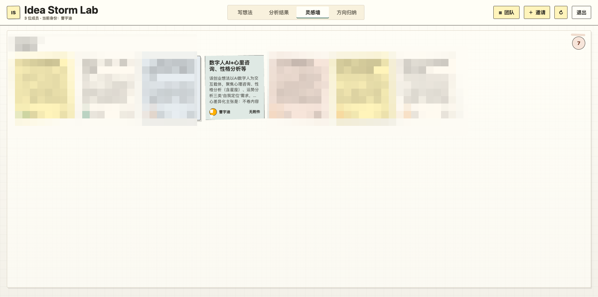
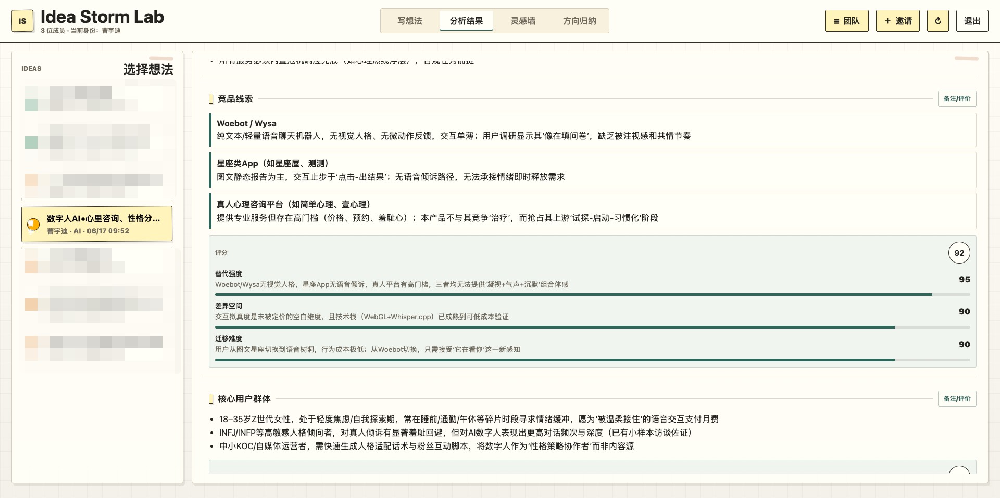
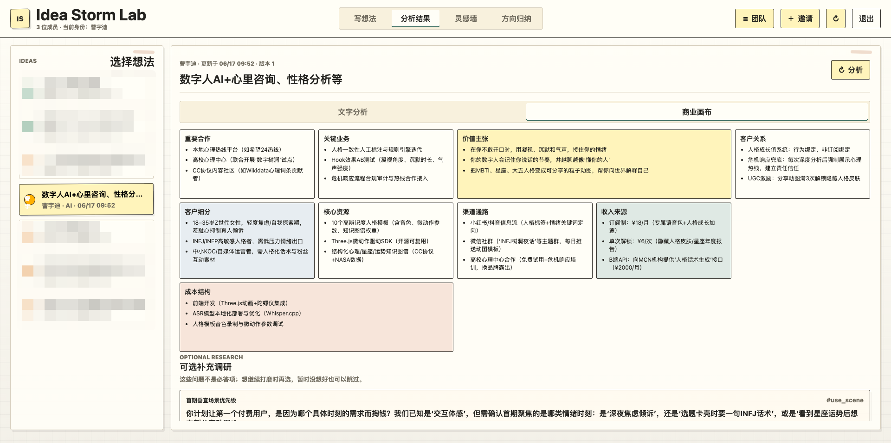
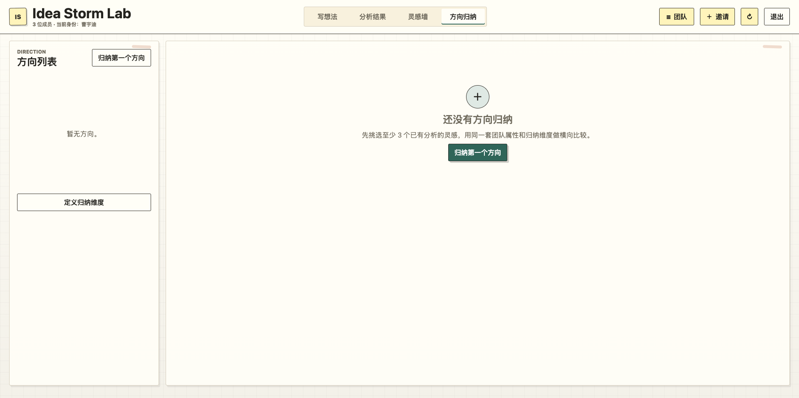

01 / PRODUCT
Idea Storm Lab
面向早期创业团队的邀请制脑暴工具，将成员提交的模糊想法转化为结构化分析、商业模式画布和方向归纳材料。
它证明的是 AI 原生产品从输入、分析、归纳到团队共享的完整工作流。
AI PRODUCT LAB / CAO YUDI
一个关于 AI Agent、产品设计工程、创意生成和复杂业务决策的个人产品实验室。这里展示的不是一次性生成物，而是 AI 进入真实工作流后的系统设计。
PROJECT INDEX
页面不把三个项目强行做成同款作品卡。Idea Storm Lab 展示界面证据，Design Harness 展示方法论系统，ARCOS 展示复杂业务策略设计。
面向早期创业团队的邀请制脑暴工具，将成员提交的模糊想法转化为结构化分析、商业模式画布和方向归纳材料。
它证明的是 AI 原生产品从输入、分析、归纳到团队共享的完整工作流。
面向 Codex 的 AI 产品设计工程协议，将设计任务组织成 Work Item、Gate、Project Memory 和 Outputs。
它证明的是你在思考 AI 协作的状态、边界、批准和长期记忆。
面向企业级工单调度的产品设计实验，将资源、风险、时间、负载和技能抽象为可解释的调度机制。
它证明的是复杂业务策略从产品文档到运行时协议的转译能力。
PRODUCT EVIDENCE
截图只服务于证据，不主导整站风格。这里展示的是从想法收集、分析结果、商业画布到方向归纳的产品闭环。




DESIGN MEMOS
Design Harness 和 ARCOS 不适合堆截图。它们真正有价值的地方，是把 AI 协作和复杂调度分别抽象成可复用的产品机制。
MEMO / DESIGN HARNESS
Design Harness 关注的不是让 AI 生成一次性页面，而是让 AI 在产品设计与实现过程中拥有可恢复上下文、明确确认点、可审计决策和可继承项目记忆。
MEMO / ARCOS
ARCOS 将调度问题从“派给谁”拆解为工单风险、资源能力、时间压力、工作难度、负载均衡和可解释验证之间的系统性取舍。
Idea Storm Lab 让 AI 参与早期创意收集、结构化分析和方向归纳。
Design Harness 让 AI 设计过程拥有状态、记忆、确认和交付边界。
ARCOS 将企业级调度策略转译为可解释、可仿真、可追踪的产品机制。
POSITIONING
这三个实验共同指向一个问题：AI 如何在真实产品场景里承担持续协作、决策支持和过程治理能力。第一版先展示方向和证据，后续可以继续补项目链接与详细案例。